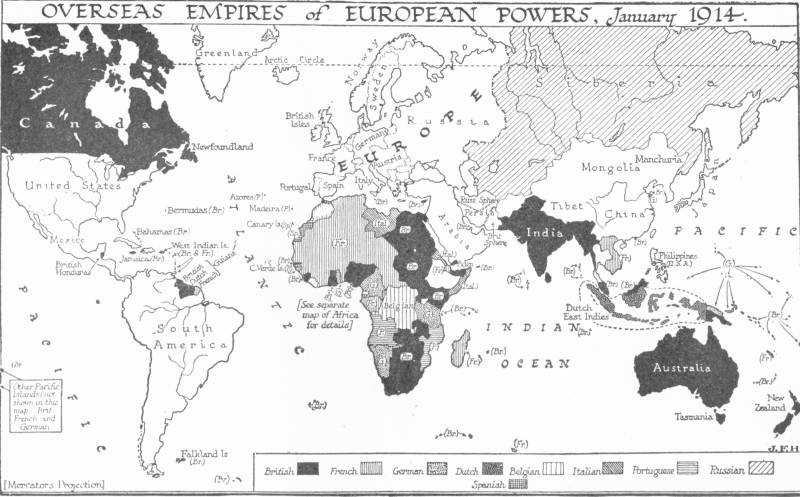

역사 / 혁명과 개혁
무술변법 — 황제의 명령만으로 국가는 바뀔 수 있었을까
1898년 청의 개혁과 교육, 짧은 정치적 실험의 한계의 역사적 배경과 변화, 그 안의 선택을 살펴봅니다.
이야기 읽기A NEW WALK
이번에 함께 읽을 이야기 10편입니다.
소주제별 서가 ↗역사 / 혁명과 개혁
1898년 청의 개혁과 교육, 짧은 정치적 실험의 한계의 역사적 배경과 변화, 그 안의 선택을 살펴봅니다.
이야기 읽기
역사 / 전쟁과 외교
1898년 나일강의 조우, 영국과 프랑스의 경쟁과 현지의 부재의 역사적 배경과 변화, 그 안의 선택을 살펴봅니다.
이야기 읽기
역사 / 국가와 권력
1860년대 외국의 개입과 막시밀리아노, 공화국의 생존의 역사적 배경과 변화, 그 안의 선택을 살펴봅니다.
이야기 읽기
역사 / 법과 제도
스페인 유대인 추방과 개종, 신앙의 통일이 만든 이주의 부담의 역사적 배경과 변화, 그 안의 선택을 살펴봅니다.
이야기 읽기
역사 / 전쟁과 외교
1814~1815년의 협상, 세력 균형과 국경 안에 남은 사람들의 역사적 배경과 변화, 그 안의 선택을 살펴봅니다.
이야기 읽기
역사 / 전쟁과 외교
1648년의 평화, 종교적 타협과 제국 안의 권한의 역사적 배경과 변화, 그 안의 선택을 살펴봅니다.
이야기 읽기
도시와 사회 / 도시의 탄생과 성장
12세기 북이탈리아 도시와 황제, 자치권을 둘러싼 연대의 역사적 배경과 변화, 그 안의 선택을 살펴봅니다.
이야기 읽기
경제·산업·금융 / 무역과 시장
1851년 금광의 확대와 일손의 이동, 생활비와 채굴 허가증의 역사적 배경과 변화, 그 안의 선택을 살펴봅니다.
이야기 읽기
생각과 지식 / 교육과 배움
1872년 학제와 학교의 확대, 배움과 국가의 관계의 역사적 배경과 변화, 그 안의 선택을 살펴봅니다.
이야기 읽기
생각과 지식 / 교육과 배움
파리와 볼로냐, 가르치는 사람과 배우는 사람의 조직의 역사적 배경과 변화, 그 안의 선택을 살펴봅니다.
이야기 읽기